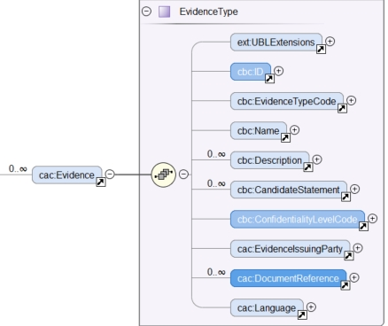

Evidences
Related information requirements
See formal requirements related to evidences in the e-Sens site: (tbr092-017).
XSD Schema
Remember that evidences are indirectly linked to responses based on the identifier of the evidence: in the response, the element cac:EvidenceSupplied/cbc:ID contains the identifier set in /QualificationApplicationResponse/cac:Evidence/cbc:ID. See XML example below; see also the example XML file ESPD-Response.xml for an example.
The figure below shows the XSD Diagram for the UBL-2.3 component cac:Evidence (elements in blue are the expected ones in ESPD-EDM):

Figure 241. cac:Evidence XSD diagram
The UBL-2.3 element cac:Evidence is a specialisation of cac:DocumentReference. This other XSD diagram shows this association and, in blue, highlights the elements expected in the ESPD-EDM:

Figure 242. cac:DocumentReference inside cac:Evidence XSD diagram
Mock-ups and data structures
In principle only a few elements are kept in the ESPD Response document about an evidence: its Identifier, a URL from where to access its content, a Reference/Code, a Confidentiality indicator, and the Issuer.
This group of data repeats frequently in the many different mock-ups presented in this document. The one below is just one example and will be used to illustrate where the three element go in the XML instance of an evidence.

Figure 243. Conviction 'Participation in criminal organisation', mock-up (EO perspective)
|
Duplicity of the Issuer Beware that the current model of UBL-2.3 provides two elements for the Issuer, one for the issuer of the evidence and another for the issuer of the document reference. The ESPD-EDM uses always the one inside the document reference to refer to the issuer of the evidence (and of the document that 'is' the evidence). Thus the element used in the ESPD is cac:Evidence/cac:DocumentReference/cac:IssuerParty/cac:PartyIdentification/cbc:ID. |
Expected (and other) Elements
This list below enumerates the elements of cac:Evidence that could be used in (that make sense for) an ESPD Response. Notice though that the current versions of the ESPD-EDM only use the few elements mentioned above: ID, URL, Reference/Code, Confidentiality level and Issuer.
Table 44. Elements expected in an Evidence
Class name: |
cac:Evidence |
Definition: |
A class to describe an item of evidentiary support for representations of capabilities or the ability to meet tendering requirements, which an economic operator must provide for acceptance into a tendering process. |
Business rule(s): |
None |
File: |
ubl-2.3/xsdrt/common/UBL-CommonAggregateComponents-2.3.xsd |
Path: |
/QualificationApplicationResponse/cac:Evidence |
Context of use: |
The economic operator uses it in the ESPD Response document to provide evidentiary support to one or more criteria (tbr092-017). |
| Components | Type | Card | Description | Requirements |
|---|---|---|---|---|
cbc:ID |
Identifier |
1 |
An identifier for this item of evidentiary support. |
Information Requirement: tbr092-017 Rule: The Evidence ID MUST be unique in the ESPD Response XML instance (i.e. two evidences cannot have the same ID value). It is recommended to use always a UUID UUID of version 4 (random generated UUID). Rule scope: Common (BR-TCR-09, BR-OTH-0) |
cbc:EvidenceTypeCode |
Code |
0..1 |
A code signifying the type of evidence. |
Information Requirement: tbr092-017, tbr092-007, tbr092-006 Rule: A code signifying the type of evidence. Could be used in the future in alignment to e-Certis. Rule scope: BR-OTH-01 |
cbc:Name |
Text |
0..1 |
The name of the evidence. |
Information Requirement: tbr092-017, tbr092-007, tbr092-006 Rule: None. Could be used in the future in alignment to e-Certis. |
cbc:Description |
Text |
0..1 |
The textual description for this Evidence. |
Information Requirement: tbr092-017, tbr092-007, tbr092-006 Rule: Use this field to keep the Reference/Code of the Evidence. |
cbc:CandidateStatement |
Text |
0..1 |
Information about a candidate statement that the buyer accepts as a sufficient response. |
Information Requirement: tbr092-017, tbr092-007, tbr092-006 Rule: None. No rule is applied. |
cbc:ConfidentialityLevelCode |
Code |
0..1 |
A code specifying the confidentiality level of this evidence. |
Information Requirement: tbr092-017 Rule: Compulsory use of the Code List access-right. Software application should set this code to CONFIDENTIAL automatically when the confidentiality level code of at least one criterion to which this evidence is associated is set to CONFIDENTIAL. Rule scope: BR-TCR-02, BR-OTH-01, BR-OTH-01#18, BR-OTH-03 |
This other table lists the elements from cac:Evidence/cac:DocumentReference used in the ESPD-EDM:
Table 45. Elements expected from the 'cac:Evidence/cac:DocumentReference' element
Class name: |
cac:DocumentReference |
Definition: |
A reference to the evidentiary document. |
Business rule(s): |
None |
File: |
ubl-2.3/xsdrt/common/UBL-CommonAggregateComponents-2.3.xsd |
Path: |
/QualificationApplicationResponse/cac:Evidence/cac:DocumentReference |
Context of use: |
The economic operator uses it in the ESPD Response document to supply the URL of the evidence and the party who issued the evidentiary document. (tbr092-017, tbr092-022, tbr092-006, tbr092-007). |
| Components | Type | Card | Description | Requirements |
|---|---|---|---|---|
cbc:ID |
Identifier |
1 |
An identifier for the referenced document. |
Information Requirement: tbr092-017, tbr092-022, tbr092-006, tbr092-007 Rule: If the reference or verification code is provided for the evidence use this element to place it. This 'code' is used in some countries (e.g. Spain) to check that the document is authentic. If a verification code is supplied you can use an official 'end-point' to retrieve an image (or a PDF) of the document and check that the evidence is authentic. Rule scope: BR-OTH-02 |
cac:Attachment/cac:ExternalReference/cbc:URI |
Identifier |
1 |
The Uniform Resource Identifier (URI) that identifies the external object as an Internet resource. |
Information Requirement: tbr092-017, tbr092-022, tbr092-006, tbr092-007 Rule: None. No rule is applied. |
cac:IssuerParty/cac:PartyIdentification/cbc:ID |
Identifier |
0..1 |
The identifier of the party issuer of the documentary evidence. |
Information Requirement: tbr092-017, tbr092-007, tbr092-006 Rule: Not currently used in ESPD, but if you decide to use it try to use the VAT number whenever possible. Rule scope: BR-OTH-02 |
cac:IssuerParty/cac:PartyName/cbc:Name |
Text |
0..1 |
The name of the party issuer of the documentary evidence. |
Information Requirement: tbr092-017, tbr092-007, tbr092-006 Rule: ESPD-EDM uses this element to keep the name of the evidence issuer in the ESPD Response XML instance. |
cac:IssuerParty/cbc:WebsiteURI |
URI |
0..1 |
The website of the party issuer of the documentary evidence. |
Information Requirement: tbr092-017, tbr092-007, tbr092-006 Rule: None. No rule is applied. |
XML Examples
Example 1: Two different evidences for two criteria
The following snippet uses the same two criteria shown in the XML example snippet 1.a): hence the values of the cac:ValidatedCriterionPropertyID are 'd8d5478e-cc65-48c9-a189-19bbe87a9bfd' (criterion property 'participation in a criminal organisation') and '7c7fb445-c5f9-4f92-8b58-7f06a541951f' (criterion property 'contributions certificates').
XML snippet 2 different evidentiary documents per response
XML snippet 1.b) different evidentiary documents per response
<!-- ANSWERS TO QUESTION(s) -->
<!-- ... elements removed for brevity .. -->
<!-- Answer to Criterion:Participation in a criminal organisation -->
<!-- Property:Evidence Supplied (PropertyID:d8d5478e-cc65-48c9-a189-19bbe87a9bfd) -->
<cac:TenderingCriterionResponse>
<cbc:ID schemeID="ISO/IEC 9834-8:2008 - 4UUID" schemeAgencyID="EU-COM-GROW" schemeVersionID="3.0.1">219949a1-b7bb-4d7e-8c3b-cc8ca695e15b</cbc:ID>
<cbc:ValidatedCriterionPropertyID schemeID="criterion" schemeAgencyID="EU-COM-GROW" schemeVersionID="3.0.1">d8d5478e-cc65-48c9-a189-19bbe87a9bfd</cbc:ValidatedCriterionPropertyID> (1)
<cbc:ConfidentialityLevelCode listID="http://publications.europa.eu/resource/authority/access-right" listAgencyID="OP" listVersionID="20211208-0">PUBLIC</cbc:ConfidentialityLevelCode> (2)
<cac:EvidenceSupplied>
<cbc:ID>7dea9283-f8a2-481f-9ea6-41438e25fdd4</cbc:ID> (3)
</cac:EvidenceSupplied>
</cac:TenderingCriterionResponse>
<!-- Answer to Criterion:Contributions certificates -->
<!-- Property:URL (PropertyID:191b34a8-5af0-4d53-b431-4ecd624218ea) -->
<cac:TenderingCriterionResponse>
<cbc:ID schemeID="ISO/IEC 9834-8:2008 - 4UUID" schemeAgencyID="EU-COM-GROW" schemeVersionID="3.0.1">7c7fb445-c5f9-4f92-8b58-7f06a541951f</cbc:ID>
<cbc:ValidatedCriterionPropertyID schemeID="criterion" schemeAgencyID="EU-COM-GROW" schemeVersionID="3.0.1">191b34a8-5af0-4d53-b431-4ecd624218ea</cbc:ValidatedCriterionPropertyID> (4)
<cbc:ConfidentialityLevelCode listID="http://publications.europa.eu/resource/authority/access-right" listAgencyID="OP" listVersionID="20211208-0">CONFIDENTIAL</cbc:ConfidentialityLevelCode> (5)
<cac:EvidenceSupplied>
<cbc:ID>3b3be32e-3b7f-4a17-a0bb-a84210f61bb8</cbc:ID> (6)
</cac:EvidenceSupplied>
</cac:TenderingCriterionResponse>
<!-- EVIDENCES -->
<cac:Evidence>
<cbc:UUID schemeID="ISO/IEC 9834-8:2008 - 4UUID" schemeAgencyID="EU-COM-GROW" schemeVersionID="2.0">7dea9283-f8a2-481f-9ea6-41438e25fdd4</cbc:UUID> (7)
<cbc:ConfidentialityLevelCode listID="http://publications.europa.eu/resource/authority/access-right" listAgencyID="OP" listVersionID="20211208-0">PUBLIC</cbc:ConfidentialityLevelCode> (8)
<cac:DocumentReference>
<!-- Verification code to access an authentic 'manifestation' of the document from the original issuer end-point -->
<cbc:ID schemeID="EAN-13" schemeAgencyID="EU-COM-GROW" schemeVersionID="2.0">5901234123457</cbc:ID> (9)
<cac:Attachment>
<cac:ExternalReference>
<cbc:URI>http://interior.gob.es/pub/cert?id=5901234123457</cbc:URI>(10)
</cac:ExternalReference>
</cac:Attachment>
<cac:IssuerParty>
<cac:PartyName>
<cbc:Name languageID="es">Ministerio del Interior</cbc:Name> (11)
</cac:PartyName>
</cac:IssuerParty>
</cac:DocumentReference>
</cac:Evidence>
<cac:Evidence>
<cbc:UUID schemeID="ISO/IEC 9834-8:2008 - 4UUID" schemeAgencyID="EU-COM-GROW" schemeVersionID="2.0">3b3be32e-3b7f-4a17-a0bb-a84210f61bb8</cbc:UUID>(12)
<cbc:ConfidentialityLevelCode listID="http://publications.europa.eu/resource/authority/access-right" listAgencyID="OP" listVersionID="20211208-0">CONFIDENTIAL</cbc:ConfidentialityLevelCode> (13)
<cac:DocumentReference>
<!-- Verification code to access an authentic 'manifestation' of the document from the original issuer end-point -->
<cbc:ID schemeID="EAN-13" schemeAgencyID="EU-COM-GROW" schemeVersionID="2.0">6002345234568</cbc:ID> (14)
<cac:Attachment>
<cac:ExternalReference>
<cbc:URI>http://aeat.gob.es/pub/cert?id=6002345234568</cbc:URI> (15)
</cac:ExternalReference>
</cac:Attachment>
<cac:IssuerParty>
<cac:PartyName>
<cbc:Name languageID="es">Agencia Tributaria</cbc:Name> (16)
</cac:PartyName>
</cac:IssuerParty>
</cac:DocumentReference>
</cac:Evidence>
</QualificationApplicationResponse>-
ID value of the first criterion property (QUESTION) for which this response value is the answer.
-
The criteron is to be treated as 'PUBLIC': it could be published.
-
Identifier of the first evidence object that is used for this criterion: it must match the value provided for the cac:Evidence/cbc:ID element of the evidence.
-
ID value of the second criterion property (QUESTION) for which this response value is the answer.
-
Confidentiality level is set to 'CONFIDENTIAL'. Therefore the evidence linked to this response will also be treated as 'CONFIDENTIAL'.
-
Identifier of the second evidence object that is used for this second criterion: it must match the value provided for the cac:Evidence/cbc:ID element of the evidence.
-
The identifier of the first evidence. It matches the cac:EvidenceSupplied/cbc:ID element value of the first response.
-
Confidentiality code for the first evidence: 'PUBLIC', notice that it is consistent with the fact that the response is also set as 'PUBLIC'.
-
Verification code ID for the first evidence (a 13 digit EAN-13 barcode number in this case).
-
URL from where to get the document. The fact that the evidence MUST BE treated as CONFIDENTIAL is not inconsistent with the fact that the evidence is available online from a free-of-charge national data base.
-
The name of the issuer of the first evidenciary document.
-
ID of the second criterion property (QUESTION) for which this response value is the answer.
-
The criteron is to be treated as 'CONFIDENTIAL': addressed only to the evaluators.
-
Verification code ID of the second evidence.
-
URL from where to get the document.
-
The name of the issuer of the second evidenciary document.